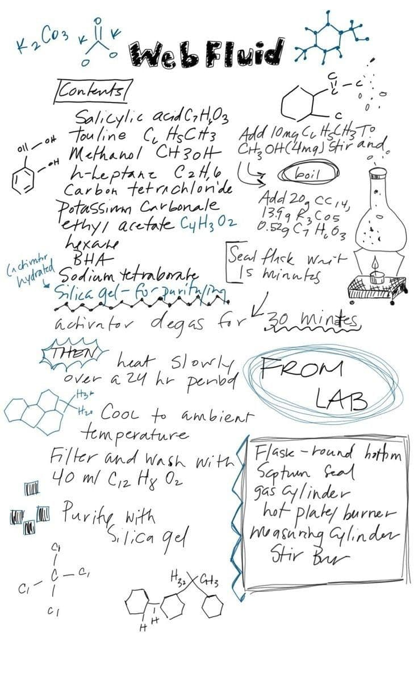
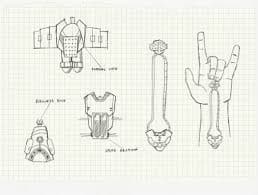
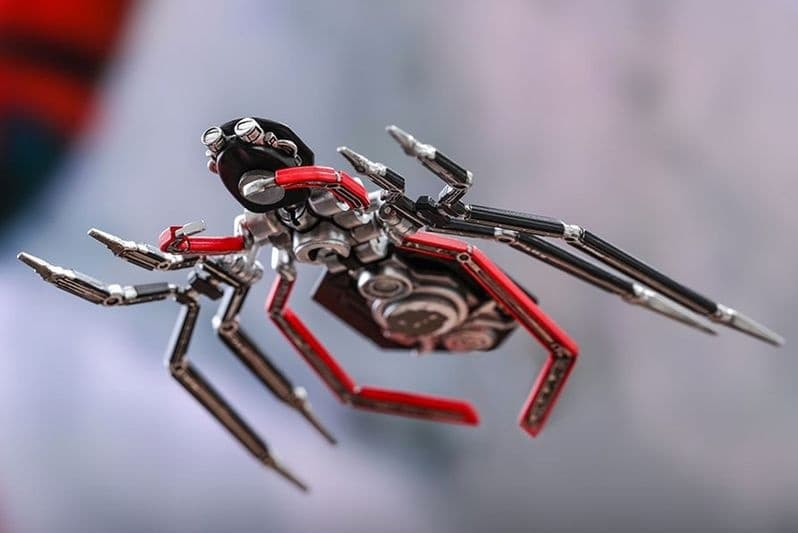

El Fluido "Mágico"
Es mi gran invento. Un adhesivo súper fuerte que se disuelve solo. Ideal para colgar cosas... o colgarse de ellas. ¡No mancha la ropa!
Base Bio-Química

Es mi gran invento. Un adhesivo súper fuerte que se disuelve solo. Ideal para colgar cosas... o colgarse de ellas. ¡No mancha la ropa!
Base Bio-Química
Hechos con piezas de relojes y tecnología Stark. Se ajustan a la muñeca y son súper discretos. No salgo de casa sin ellos.
Tecnología Neumática
Pequeños drones que me ayudan a vigilar el tráfico (y otras cosas). Tienen una IA que a veces me contesta con ironía.
Principios de VueloSi encuentras alguno de estos por la calle, por favor, devuélvelo a Queens.
VOLVER A LA NORMALIDAD